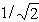
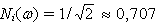
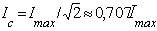
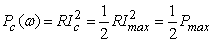
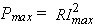
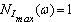
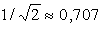

ѕолосой пропускани€ последовательного колебательного контура называют диапазон частот Δω = ωсв - ωсн, в пределах которого значение нормированного тока Ni(ω) не падает больше, чем в  относительно своего максимального значени€, равного единице. Ќа границах полосы пропускани€, т. е. на частотах ωсн и ωсв, называемых нижней и верхней частотами среза , нормированный ток  (см. рис. 2.76).
»так, ток на границах среза
.
ѕри этом активна€ мощность

сигнала, прошедшего через контур, в 2 раза меньше максимальной мощности  при резонансе. ѕоэтому под полосой пропускани€ понимают также диапазон частот, в пределах которого максимальна€ мощность выходного сигнала снижаетс€ не более, чем в два раза.
Ќа графиках рис. 2.76, а и б, . ѕровед€ горизонтальную линию на уровне  и опустив перпендикул€ры из точек пересечени€ этой линии с кривой Ni(ω), определ€ют (на оси абсцисс) полосу пропускани€ Δω = ωсв - ωсн. —огласно (3.114) Ni(ω) = 0,707 при a(ω) = ± 1 (рис. 2.76, а).
ѕриближенно полосу пропускани€ контура определ€ют по формуле